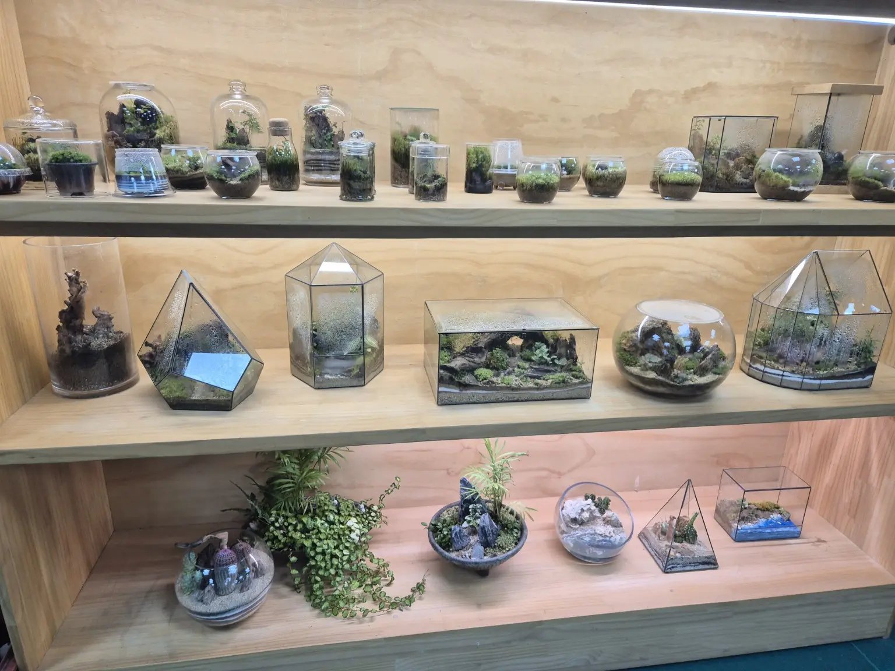
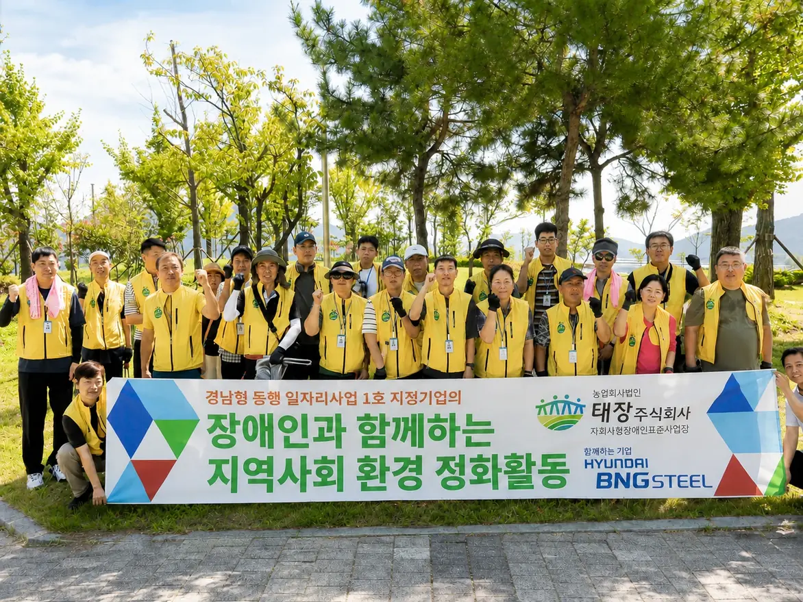
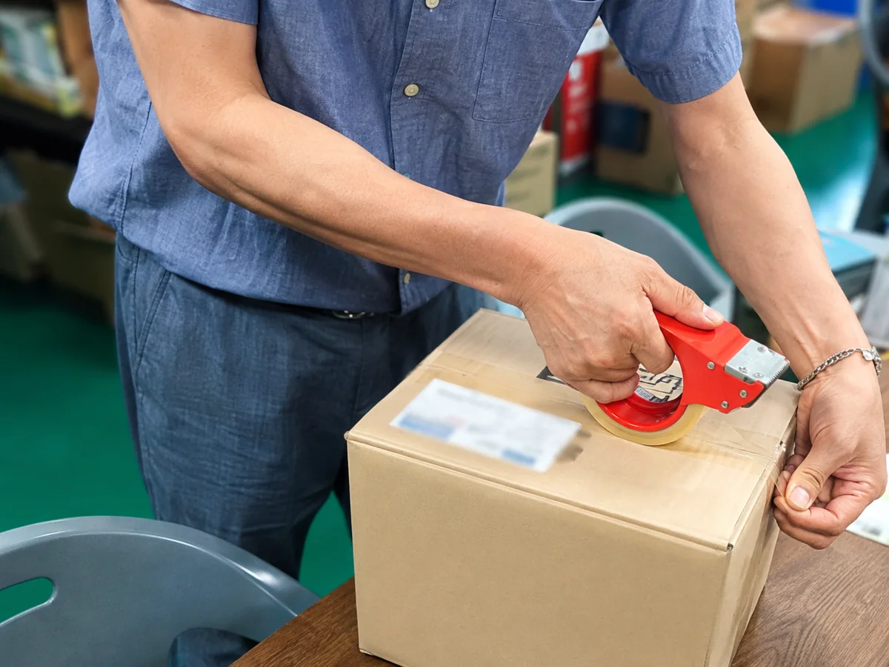

서로 다른 일을,
각자의 손으로
그림을 그리고, 작은 정원을 만들고, 이웃의 공간을 가꾸고, 기업의 물품을 포장합니다. 태장에서는 서로 다른 작업을 각자의 강점과 속도에 맞춰 익혀갑니다.
일하는 모습 보기태장의 일터를 만나보세요

테라리움 작업
재료와 용기 준비, 구성품 확인, 검수와 포장으로 이어지는 작업을 익혀갑니다. 작은 정원을 만드는 과정을 근로자가 참여할 수 있는 일로 나누어 준비합니다.
테라리움 자세히 보기

포장·검수와 수작업
기업에서 의뢰한 물품을 정해진 순서에 따라 포장하고 수량과 상태를 확인합니다. 손으로 수행하는 반복 작업은 작업물과 필요한 공정을 살펴 참여 방법을 정합니다.
포장·검수 과정 보기태장의 농장
태장의 이전 본점이 있던 창원시 마산합포구 진전면의 약 1만 평 농장입니다. 농업 기반을 이어가기 위해 일부 공간부터 단계적으로 개발하고 있습니다.